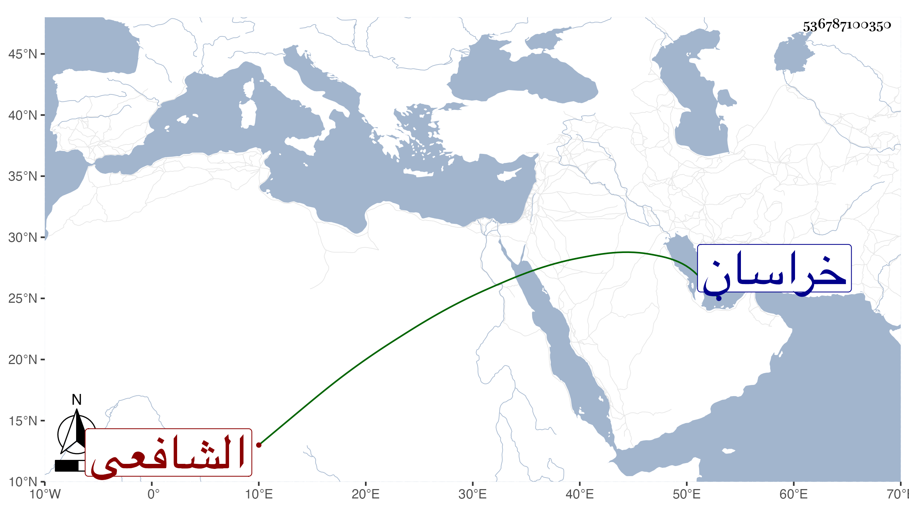

0902Sakhawi.DawLamic.ITO20230111-ara1.EIS1600.536787100350
Biography ID: 536787100350
24
محمد بن محمد بن محمد المولى الشمس التبادكاني نسبة لقرية من قرى مشهد خراسان الشافعي ويعرف بالقاضي وكأنها شهرة لأحد من أسلافه وإلا فلم يل هو ولا أبوه القضاء . كان مرجع تلك النواحي في الفقه والسلوك ممن أخذ عن الخافي والنظام عبد الحق التبادكاني أجاز للعلاء بن السيد عفيف الدين ولولده في كتابة طويلة مؤرخة بشوال سنة أربع وسبعين والعلاء هو المفيد لترجمته قال وكان أبوه عالما صالحا وكان لقي العلاء لصاحب الترجمة بمنية محل أبي سعيد بن أبي الخير من أعمال خراسان وسمع منه أشياء منها عدة أربعينات من جمعه وشرحه لمنازل السائرين وتخميسه للبردة وهو علامة مسلك مرشد وعظمه جدا في علمي الظاهر والباطن وكان حيا في سنة خمس وسبعين .
